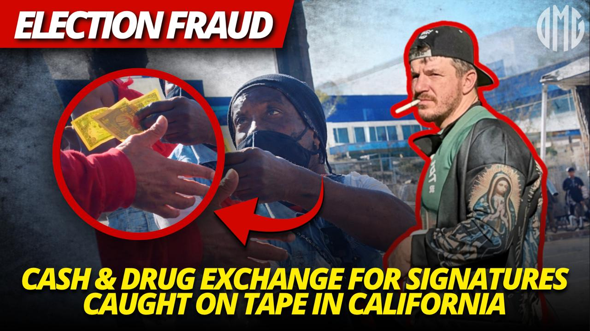
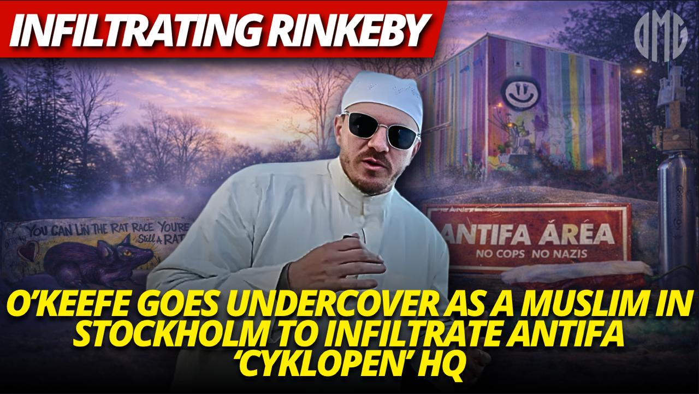
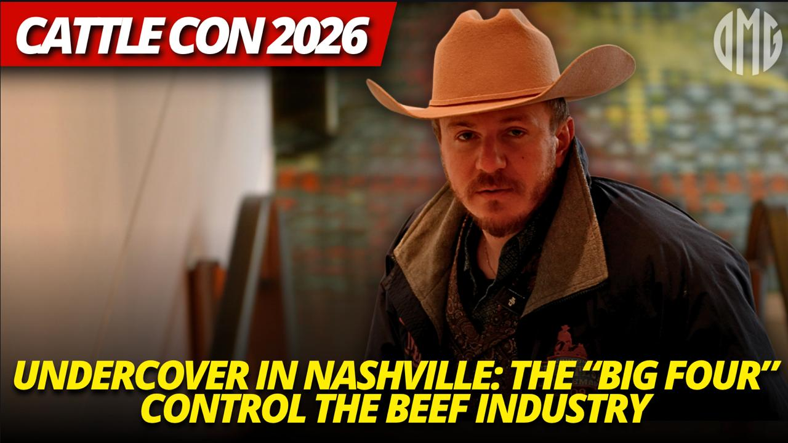
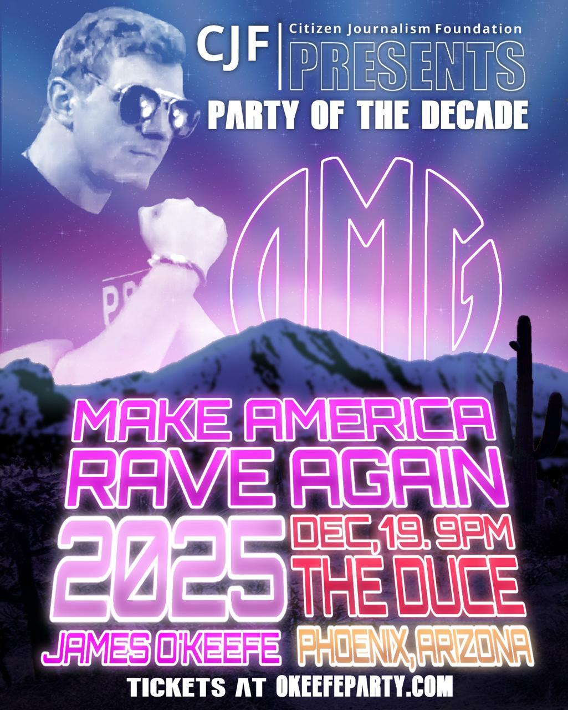
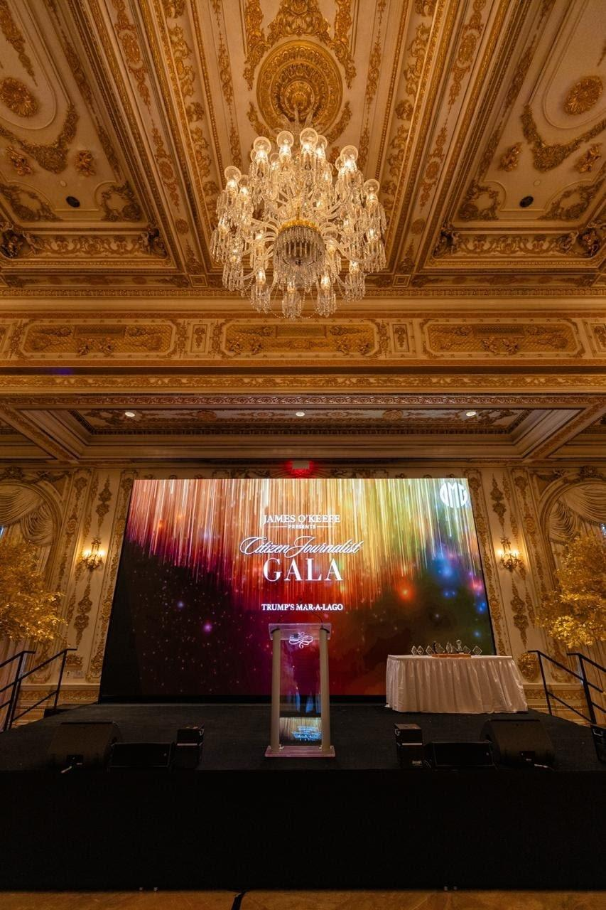
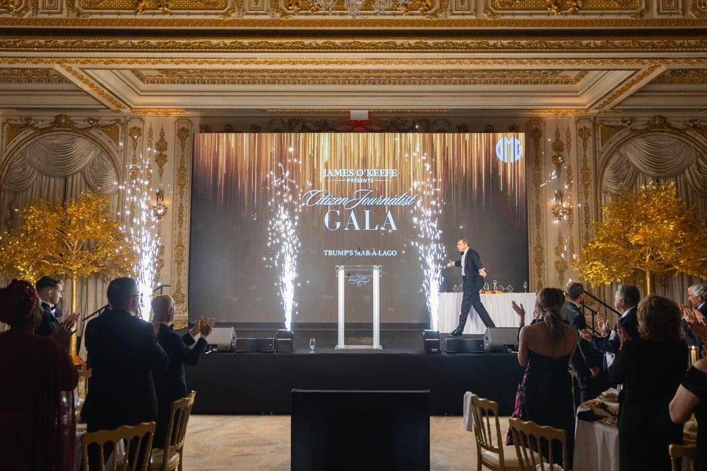
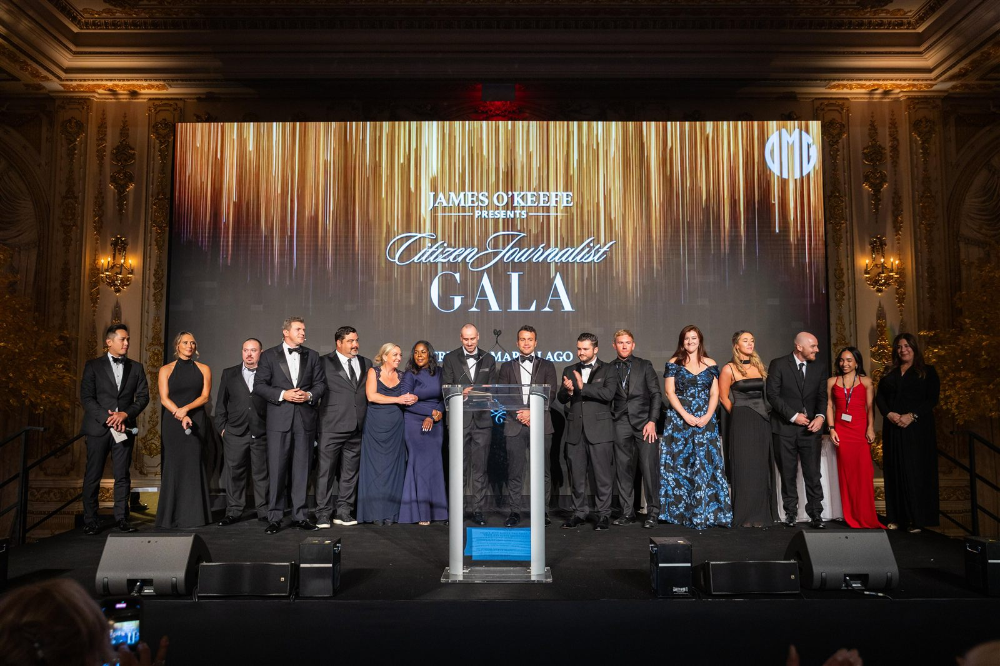

Adobe Premiere Pro
DEPARTURE | Short Film
A boy waiting for the bus at night finds that his bus is very late, while a girl keeps him company as they pass the time. He eventually becomes distracted and misses the bus, causing an unforeseen tragedy.
Communications · Marketing · Administration · Film · Production
Production Assistant · Event Assistant · Communications Specialist
I'm pursuing a Bachelor's in Film with a minor in Terrorism Studies at the University of Central Florida, alongside an Associate's degree from Valencia College. My passion lies in exploring the power of visual storytelling and immersive world-building.
I aim to contribute my creative vision and strong collaboration to projects that push creative boundaries and engage audiences.
// selected work
As a passionate producer and filmmaker, I've explored storytelling across a wide spectrum of genres and themes, from thought-provoking educational films and compelling marketing pieces to projects supporting good causes. My work reflects a deep commitment to visual storytelling, spanning fiction films, silent cinema, professional photo shoots, including a Guinness World Record event, and emotionally gripping dramas.
Adobe Premiere Pro
A boy waiting for the bus at night finds that his bus is very late, while a girl keeps him company as they pass the time. He eventually becomes distracted and misses the bus, causing an unforeseen tragedy.

Adobe Premiere Pro
Aaliyah Ricketts walks us through the basics of getting good production sound and why it's important.

DaVinci Resolve
A mad scientist accidentally consumes an experimental growth hormone, turning into a towering menace that destroys UCF. A thrilling mix of sci-fi, dark comedy, and classic monster film homage.

Adobe Premiere Pro
A heartfelt promotional video showcasing UCF Best Buddies, an organization fostering friendships and inclusion for individuals with intellectual and developmental disabilities.

Filmora
A lone writer sits before a blank page, their chaotic thoughts visually manifesting around them, until a single spark of inspiration finally guides their first word.
// behind the edit
A selection of short editing reels showcasing my work.
Edited using Adobe Premiere Pro. Subtitles added with Veed.io and Firecut.
Edited using Adobe Premiere Pro. Subtitles added with Veed.io and Firecut.
Edited using Adobe Premiere Pro. Subtitles added with Veed.io and Firecut.
Edited using Adobe Premiere Pro. Subtitles added with Veed.io and Firecut.
Created using Canva.
Created using Canva.
// graphic design
A selection of video thumbnail designs I created for investigative video content during a previous graphic design role, bold mastheads, subject call-outs, and high-contrast type built to stop the scroll. Designed using Adobe Photoshop and Canva. Click any thumbnail to view it full-size.
276K views

95K views

71K views

55K views
70K views
// print & promo
Event flyers designed for the Citizen Journalism Foundation's live events, using Adobe Photoshop and Canva.
This design work was completed for a client in a professional capacity and does not reflect my personal political views or affiliations.

Promotional flyer for the Citizen Journalism Foundation's "Make America Rave Again" event in Phoenix, Arizona.
Featured guest promotional flyer spotlighting Alex Stein for the "Make America Rave Again" event.
// event photography
Event photography from the Citizen Journalist Gala at Trump's Mar-a-Lago.
This photography work was completed for a client in a professional capacity and does not reflect my personal political views or affiliations.

Stage setup for the Citizen Journalist Gala at Trump's Mar-a-Lago, captured as part of my event production and photography work.

Live stage reveal moment with fireworks at the Citizen Journalist Gala, Trump's Mar-a-Lago.

Group photo on stage with the team and speakers at the Citizen Journalist Gala, Trump's Mar-a-Lago.
// capabilities
Certifications: Adobe Photoshop CS6, Microsoft Office Specialist (PowerPoint 2010, Word 2013, Excel 2013), Canva for Work, Canva Work Smarter with AI, Google Digital Marketing and E-Commerce
Editing Software: Adobe Premiere Pro, DaVinci Resolve, Filmora, iMovie, CapCut, ClipChamp, GoPro Quik, Firecut, Google Analytics, Veed.io, WordPress, Canva
Coursework: Film Production Workshop, Film and Mass Media, Cinematography I, Directing Techniques, Sound Design for Film I, Editing I, The Art of Cinema, Film History II, Avant-Garde Cinema, Film Documentary, Research Methods for Filmmakers, Film Theory and Criticism I, The American Film Artist, Film Production Management
Languages: English (Fluent), Spanish (Native)
Editing & design tools